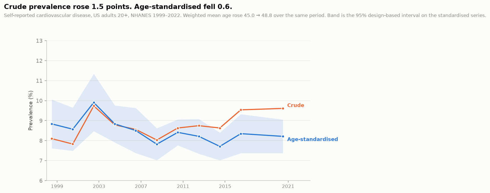
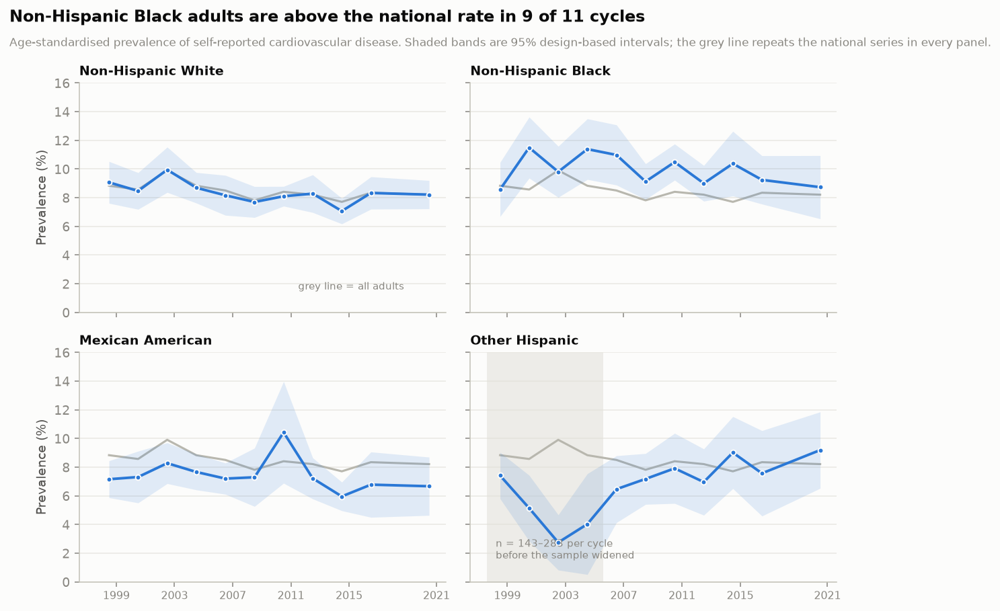
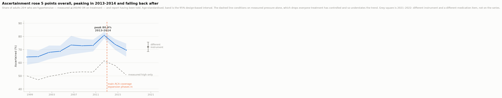

CardioTrace
How the burden of cardiovascular disease moved across 25 years, once the ageing of the population is taken out of it.
Crude prevalence of self-reported cardiovascular disease rose over the series. Age-standardised prevalence fell. Standardisation does not shrink the trend here — it reverses its sign.

Direct standardisation computes prevalence separately within each age band, then re-weights those bands to a fixed reference population — here the 2000 projected U.S. standard population, on the bands NCHS pairs with NHANES: 20–34, 35–44, 45–54, 55–64, 65–74, 75 and over. The result answers a counterfactual question: what would the national rate be if the age structure had never changed? Because the weights are held constant across cycles, any movement left in the series cannot be demographic.
The intervals are equally deliberate. NHANES is a stratified, multi-stage probability sample: people are drawn in clusters, and two people from the same cluster share a neighbourhood, a provider mix and an interviewer. Treating them as independent produces standard errors that are too small and intervals that look decisive when they are not. The variance here is Taylor-linearised and clustered on stratum × primary sampling unit, and the linearisation is applied to the standardised estimator as a whole rather than band by band. A single sampling unit contributes people to every age band at once, so band-by-band variances would discard the covariance between bands and understate the total.

An age-standardised rate cannot be checked without the distribution it was standardised to, so here it is. The left column is each band’s share of the full 2000 projected U.S. population; the right column renormalises over adults 20 and over, which is what the estimator actually applies. The bands are the ones NCHS pairs with NHANES, and the weights are sums of the Master List five-year weights they span.
| Age band | Share of all ages | Renormalised, 20+ base |
|---|---|---|
| 20-34 | 0.202052 | 0.283330 |
| 35-44 | 0.162613 | 0.228026 |
| 45-54 | 0.134834 | 0.189073 |
| 55-64 | 0.087247 | 0.122343 |
| 65-74 | 0.066037 | 0.092601 |
| 75+ | 0.060350 | 0.084627 |
The argument for design-based variance is usually made by citation. It can be measured instead. The design effect is the design-based variance divided by the variance a simple random sample of the same size would have produced; the effective sample size, n divided by that ratio, is the number of independent observations this sample is worth. NCHS publishes no design effects for continuous NHANES, so the only way to know is to compute them on the estimates at hand.
| Cycle | n | Sampling units | Total DEFF | Weighting alone | Clustering |
|---|---|---|---|---|---|
| 1999-2000 | 4,444 | 27 | 2.81 | 1.77 | 1.59 |
| 2001-2002 | 5,027 | 30 | 2.40 | 1.55 | 1.55 |
| 2003-2004 | 4,740 | 30 | 3.70 | 1.52 | 2.43 |
| 2005-2006 | 4,773 | 30 | 1.53 | 1.51 | 1.01 |
| 2007-2008 | 5,706 | 32 | 2.98 | 1.63 | 1.83 |
| 2009-2010 | 6,058 | 31 | 1.66 | 1.54 | 1.08 |
| 2011-2012 | 5,317 | 31 | 0.88 | 1.93 | 0.46 |
| 2013-2014 | 5,587 | 30 | 1.78 | 1.57 | 1.14 |
| 2015-2016 | 5,474 | 30 | 1.07 | 1.90 | 0.57 |
| 2017-2018 | 5,264 | 30 | 2.08 | 2.33 | 0.90 |
| 2021-2022 | 6,064 | 30 | 1.87 | 1.53 | 1.22 |
For this report’s age-standardised prevalence estimate, the median total design effect is 1.87, corresponding to a typical effective sample size of about 3,111 against a nominal 5,317. A design effect belongs to an estimator rather than to the sample, so this figure describes this estimate and does not transfer to another one computed on the same people.
It also carries two things at once, and they should not be conflated. Unequal selection probabilities inflate the variance on their own, by a factor of 1 + CV² of the weights — a median of 1.57 here. Dividing it out leaves a median clustering component of about 1.14. That is the honest figure for what the cluster structure costs; quoting the total as the price of clustering would overstate it by roughly half again. The reason a clustering component above one exists at all is visible in the third column — each cycle reaches roughly thirty sampling units, because participants must travel to a mobile examination centre and the centres go to a limited number of counties. Two adults from the same county share a food environment, an insurance market, a provider mix and often an interviewer, so the second largely repeats what the first already said. Treating them as independent would not bias the estimate; it would make the interval too narrow.
| Cycle | n | Cases | Crude % | Standardised % | 95% CI |
|---|---|---|---|---|---|
| 1999-2000 | 4,444 | 480 | 8.10 | 8.83 | 7.61 – 10.06 |
| 2001-2002 | 5,027 | 537 | 7.83 | 8.57 | 7.49 – 9.65 |
| 2003-2004 | 4,740 | 635 | 9.73 | 9.91 | 8.47 – 11.34 |
| 2005-2006 | 4,773 | 535 | 8.79 | 8.83 | 7.91 – 9.76 |
| 2007-2008 | 5,706 | 678 | 8.56 | 8.50 | 7.37 – 9.63 |
| 2009-2010 | 6,058 | 647 | 8.03 | 7.82 | 7.02 – 8.62 |
| 2011-2012 | 5,317 | 550 | 8.63 | 8.41 | 7.76 – 9.06 |
| 2013-2014 | 5,587 | 574 | 8.75 | 8.21 | 7.34 – 9.08 |
| 2015-2016 | 5,474 | 598 | 8.63 | 7.71 | 7.02 – 8.40 |
| 2017-2018 | 5,264 | 647 | 9.54 | 8.35 | 7.37 – 9.32 |
| 2021-2022 | 6,064 | 773 | 9.61 | 8.21 | 7.37 – 9.05 |
A self-reported outcome moves with access to care as well as with disease. That is the standard caveat, and stating it changes nothing. For one condition it can be measured: blood pressure is both taken at the examination and asked about in the questionnaire, so the share of the measurably hypertensive who report having been told is directly observable. If expanding access were inflating self-reported prevalence, this share would have to rise, and rise when access rose.

| Cycle | Instrument | Hypertensive | Ascertained | 95% CI | Measured-only denominator |
|---|---|---|---|---|---|
| 1999-2000 | auscultatory | 1,574 | 64.4% | 58.6 – 70.3 | 50.0% |
| 2001-2002 | auscultatory | 1,680 | 64.6% | 60.0 – 69.3 | 47.0% |
| 2003-2004 | auscultatory | 1,749 | 67.9% | 62.7 – 73.1 | 49.6% |
| 2005-2006 | auscultatory | 1,580 | 68.7% | 64.4 – 73.1 | 51.0% |
| 2007-2008 | auscultatory | 2,174 | 73.5% | 66.4 – 80.5 | 52.7% |
| 2009-2010 | auscultatory | 2,180 | 72.9% | 67.6 – 78.2 | 53.1% |
| 2011-2012 | auscultatory | 1,899 | 73.2% | 68.7 – 77.6 | 52.9% |
| 2013-2014 | auscultatory | 2,012 | 80.9% | 78.4 – 83.4 | 61.4% |
| 2015-2016 | auscultatory | 2,008 | 73.9% | 69.8 – 78.0 | 57.8% |
| 2017-2018 | auscultatory | 2,173 | 69.7% | 64.7 – 74.6 | 50.8% |
| 2021-2022 | oscillometric | 2,443 | 72.1% | 68.5 – 75.6 | 53.0% |
This does not support a simple coverage-driven explanation. Ascertainment improved over the first half of the series and then stopped, and the years in which coverage rose fastest are not the years in which detection improved. That is not evidence against an access effect of modest size, which eleven cycles cannot resolve either way; it is evidence that the reported trend is not obviously an artefact of better detection.